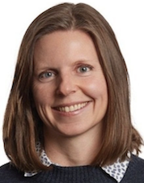
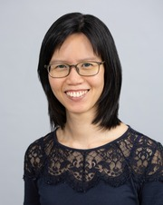
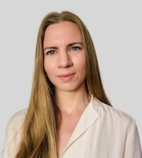
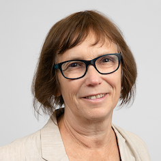
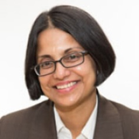
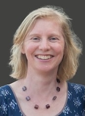
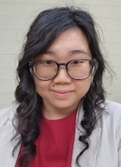
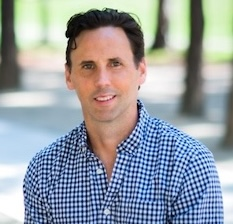

AIMOS Conference 2025
19 to 21 November 2025
The University of Sydney
The University of Sydney
Photo by Photoholgic on Unsplash
The purpose of AIMOS is to make the research process more trustworthy and efficient, and to promote the study of how research is done and how it can be improved. Our annual conference is an important collaborative space that advances this purpose.
AIMOS2025 will bring together researchers from multiple scientific disciplines to talk about how research is done and how we can do it better.
Preceding the AIMOS conference is the International Research Integrity Conference which will be held in Randwick, Sydney on November 17-18.
To be confirmed.
| Ivan Oransky | Lisa Bero | TBC 3 |
| Ivan is a medical journalist who earned his bachelor's degree from Harvard, where he held the executive editor position of The Harvard Crimson, and his M.D. from the New York University School of Medicine. He is perhaps most well-known as a co-founder of Retraction Watch, the most comprehensive database of retracted articles in academic publishing. Ivan's work has been internationally recognised for its contribution to scientific intergity. In 2015, he was awarded the John P. McGovern Award for excellence in biomedical communication from the American Medical Writers Association. In 2017, he received an honorary doctorate of civil laws from The University of the South (Sewanee). And in 2019, he was given a commendation by the judges of the prestigious John Maddox Prize. He has been featured in the New York Times and is often called upon for comments by major academic news publishers for his perspective on issues surrounding research integrity. | Plenary speaker 2 bio. | Plenary speaker 3 bio. |
|  |  |  | ||||
| Jen Beaudry | Joanna Diong | Jason Chin | Kylie Hunter | Aidan Tan | Annie Whamond | |
| (President) | (Chair) |
|  |  |  |  |  | |
| Barbara Mintzes | Teresa Davis | Lisa Parker | Kellia Chiu | Nicholas Chartres |
|
|
|
Sign up here to the AIMOS mailing list to get updates on the conference and other meta-research events.
Got a question about the conference? Email Joanna at: joanna.diong@sydney.edu.au.
Want to know more about AIMOS? Here's our web page.